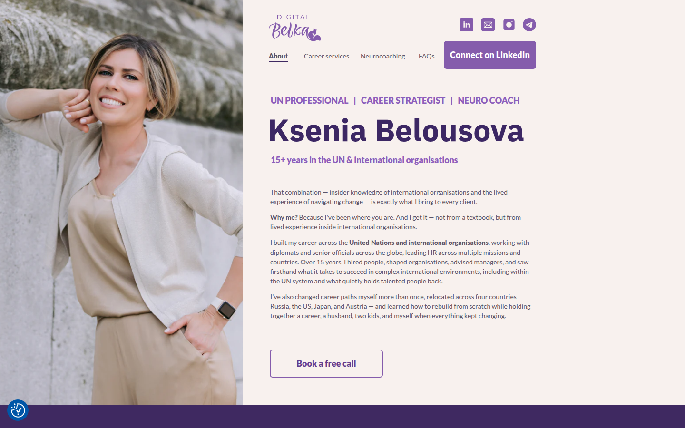
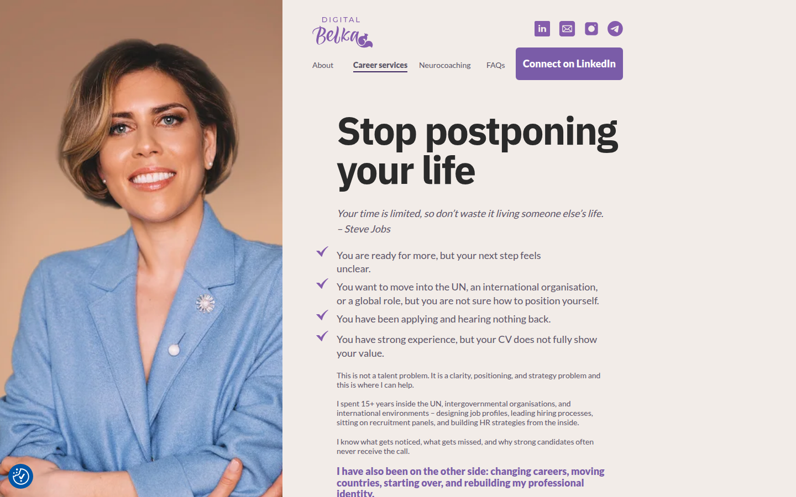
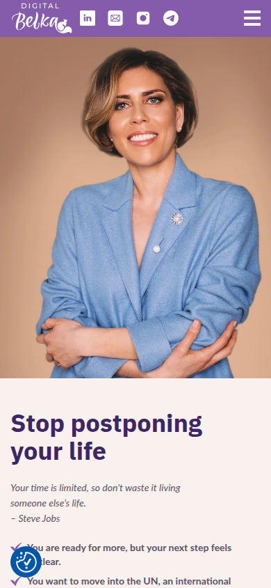
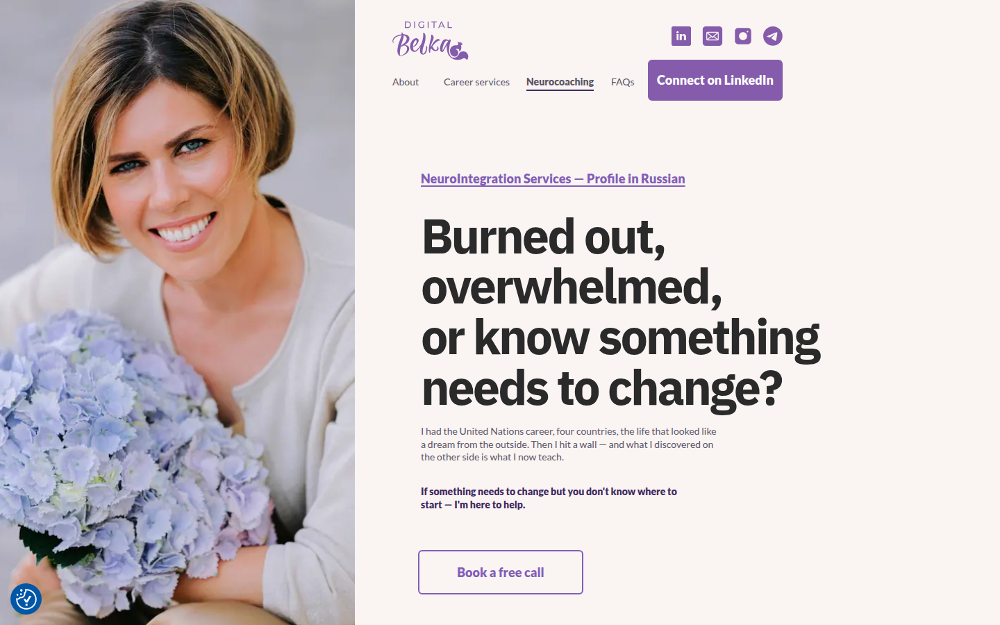
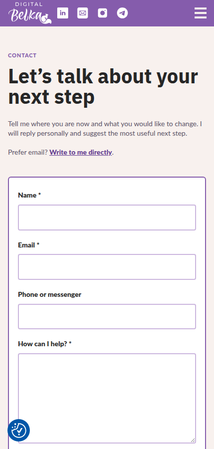

Не редизайн «с нуля», а аккуратная работа с общей темой, контентом и релизами.
Mobile и desktop
Единые компоненты темы
Staging и production QA



Скриншот не перерисован и не закрыт декоративной плашкой.
